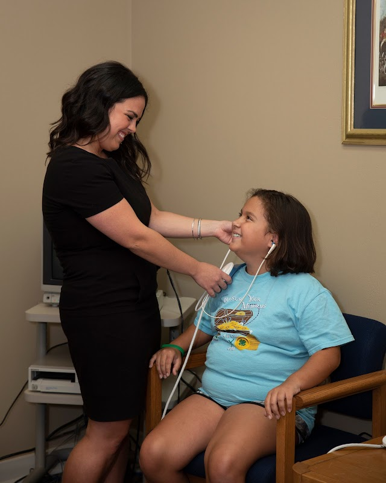

Hearing Tests & Evaluations
Comprehensive testing to understand your hearing health.
Understanding Your Hearing Health
A hearing test is the first step toward better hearing. At ACI Hearing Center, we perform comprehensive audiometric evaluations to determine the type, degree, and configuration of your hearing loss. Our tests are painless, non-invasive, and typically take about an hour.
Our sound-treated testing booth
Comprehensive audiometric testing
Types of Hearing Tests We Perform
Pure Tone Audiometry
Measures how softly you can hear tones at different pitches (frequencies). This is a core part of determining the type and degree of hearing loss.
Bone Conduction
Helps determine whether hearing loss is conductive, sensorineural, or mixed by sending sound through vibration rather than through the ear canal.
Speech Audiometry
Measures your ability to hear and understand speech at different volume levels. This helps us understand how hearing loss affects your daily conversations.
Speech-in-Noise Testing
Evaluates how well you understand speech in background noise — one of the most common real-world listening challenges.
Acoustic Reflex Test
Measures how the muscles of the middle ear respond to loud sounds. This can help identify certain middle ear and auditory pathway conditions.
Tympanometry
Evaluates the function of your middle ear by measuring how your eardrum responds to changes in air pressure. Helps identify fluid, infections, or eardrum perforations.
Auditory Brainstem Response (ABR)
Measures the electrical activity in your auditory nerve and brainstem in response to sound. Useful for testing infants and identifying nerve-related hearing issues.
ASSR
Auditory Steady-State Response — Frequency-specific hearing threshold estimation for patients who cannot respond to traditional testing methods.
DPOAE
Distortion Product Otoacoustic Emissions — Objective test of outer hair cell function in the inner ear. Fast, non-invasive, and effective for all ages.
What to Expect During Your Test
- You will be seated in a quiet, sound-treated room.
- Our audiologist will examine your ears with an otoscope.
- You will wear headphones and respond to tones at various pitches and volumes.
- You may be asked to repeat words or sentences.
- Additional tests may be performed depending on your specific needs.
- Your audiologist will explain your results using an audiogram and recommend next steps.
Understanding Your Audiogram
An audiogram is a graph that shows your hearing ability at different pitches (frequencies) and volumes (decibels). Here is a general guide:
- Normal hearing: 0–25 dB — You can hear soft sounds like whispering and rustling leaves.
- Mild hearing loss: 26–40 dB — Difficulty hearing soft speech and conversations in noisy environments.
- Moderate hearing loss: 41–55 dB — Difficulty following conversations at normal volume. Hearing aids usually help significantly.
- Moderately severe hearing loss: 56–70 dB — Difficulty hearing without amplification. Hearing aids are strongly recommended.
- Severe hearing loss: 71–90 dB — Only loud sounds are audible. Powerful hearing aids or cochlear implants may be needed.
- Profound hearing loss: 91+ dB — Very few sounds are audible. Cochlear implants may be the best option.
Who Should Get a Hearing Test?
We recommend a baseline hearing test for adults over 50, and regular monitoring after that. You should also consider a test if you:
- Frequently ask people to repeat themselves
- Have difficulty understanding speech in noisy settings
- Turn up the TV or phone louder than others prefer
- Experience ringing, buzzing, or hissing in your ears (tinnitus)
- Have a history of noise exposure at work or from hobbies
- Feel dizzy or have balance issues
- Are a veteran with service-related noise exposure

We care for patients of all ages — children and adults